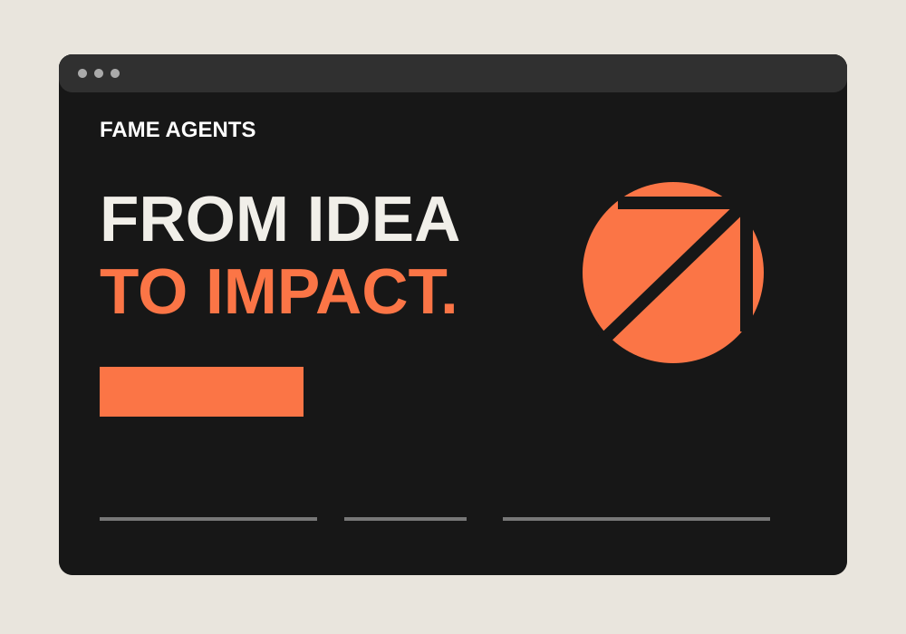
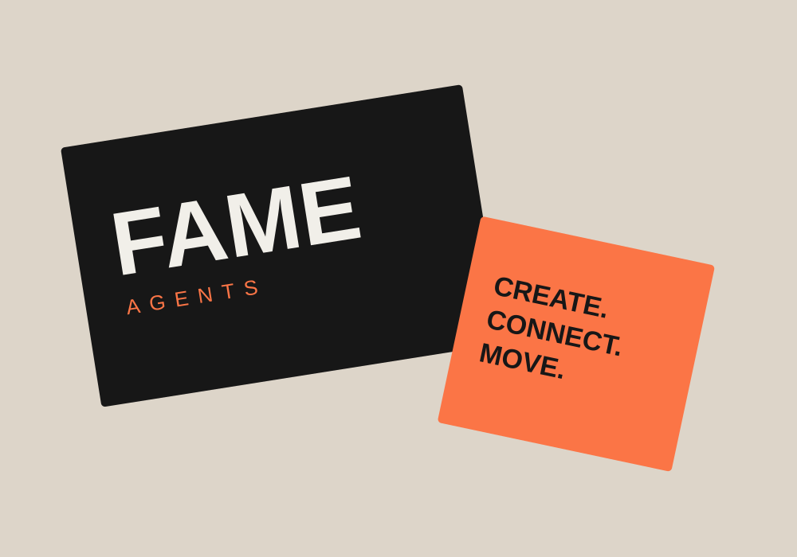
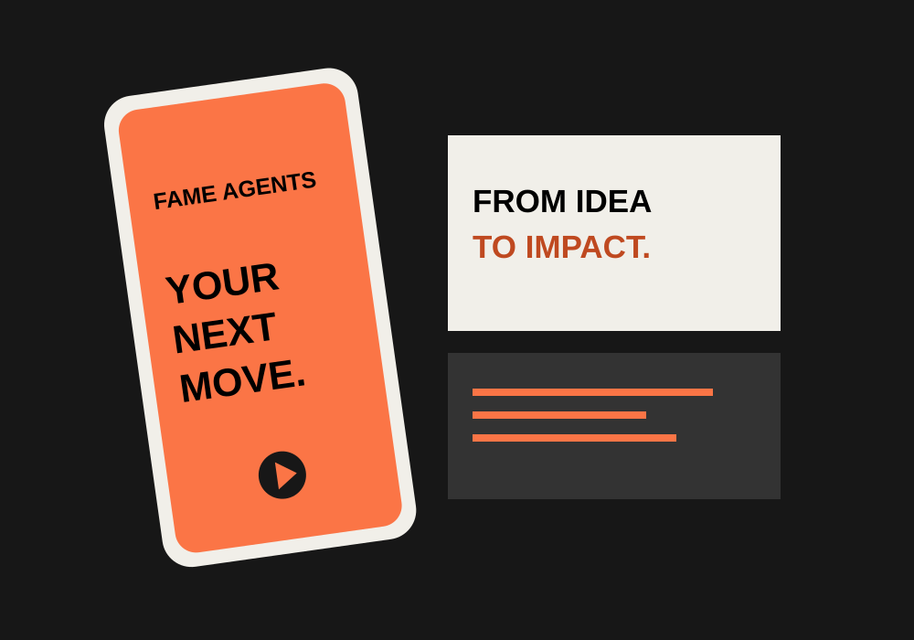

ESTUDIO CONCEPTUAL
Dirección web
Una presencia digital más clara
Una landing page con servicios claros y contacto directo.
Explora los conceptosBase en la UE. Ambición global.
Tu negocio. Tu sueño. Un camino claro.
Ayudamos a empresas y creadores a desarrollar su marca, web, contenido y lanzamiento.
FAME / Proyectos
Tres estudios conceptuales muestran cómo una idea se convierte en una dirección visual.

Dirección web
Una landing page con servicios claros y contacto directo.
Explora los conceptos
Dirección de marca
Un lenguaje visual coherente para tu web y redes.
Explora los conceptos
Contenido y lanzamiento
Formatos de redes y vídeo coordinados alrededor de un mensaje.
Explora los conceptosEjemplos propios. Son conceptos de diseño, no proyectos de clientes ni resultados comerciales.
01 / QUÉ HACEMOS
Estrategia. Marca. Web. Contenido. Lanzamiento.
Explica tus servicios. Muestra tu trabajo. Facilita las consultas.
Aprovecha mejor el material que ya tienes.
Contenido constante, con un plan claro.
FROM IDEA TO IMPACT
Nuestros servicios principales son webs, edición de vídeo y redes sociales. También ayudamos a definir el proyecto y conectar el trabajo creativo necesario.
Aclarar la idea, el público, las prioridades y los próximos pasos.
Definir la dirección visual y los materiales necesarios.
Planificar cómo presentar, lanzar y promocionar tu idea.
Acordamos alcance, entregas y apoyo especializado antes de empezar.
FAME / FROM IDEA TO IMPACT
De tu idea al siguiente paso.
Hablamos de tu objetivo, público, prioridades y presupuesto.
Acordamos el alcance, los entregables, el calendario y el presupuesto.
Desarrollamos el trabajo con revisiones durante el proceso.
Preparamos los materiales, lanzamos tu sitio o iniciamos el calendario de contenido.
Te ayudamos a decidir cuál es el siguiente paso.
FAME / TEAM
Milena, Johnson y Oliwia. Tres personas. Una dirección: de la idea al impacto.
FAME AGENTS
Cuéntanos sobre tu proyecto.
Empieza con tu visión ↗
SIGUE LA VISIÓN
Encuéntranos.
Sigue el camino.
Descubre las personas y la creatividad detrás de Fame Agents.